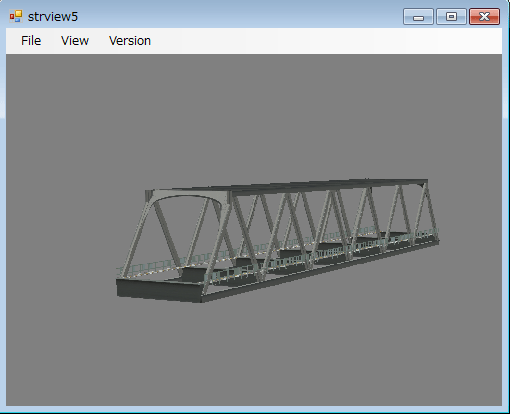
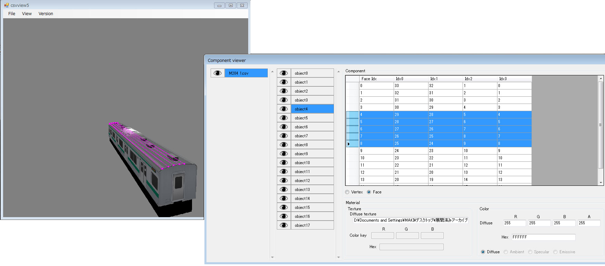
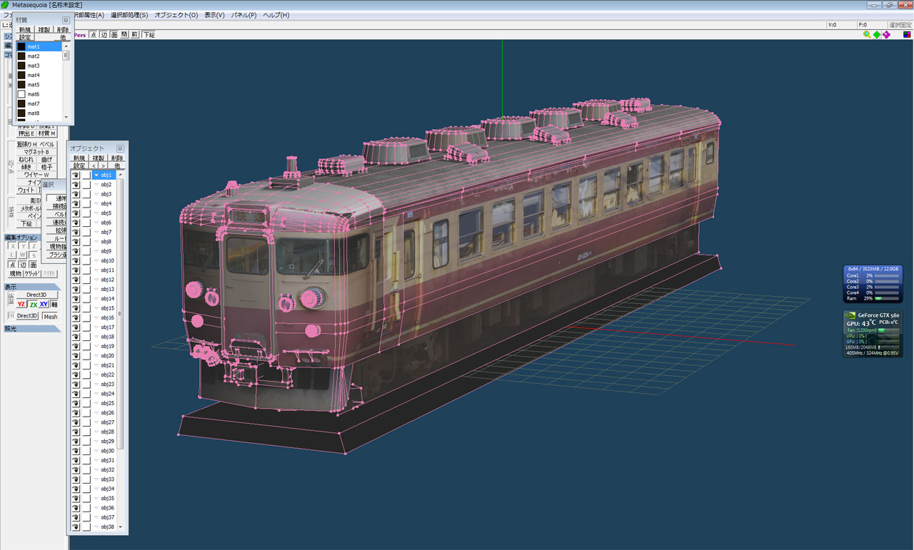

<!DOCTYPE html>
<html lang="">
<head>
    <meta charset="utf-8">
    <link crossorigin="anonymous" media="all"
        rel="stylesheet"
        href="https://mikangogo.github.io/css/frameworks.css" />
    <link crossorigin="anonymous" media="all"
        rel="stylesheet" href="https://mikangogo.github.io/css/github.css" />
    <meta name="viewport" content="width=device-width">

    <title>Tools and Utilities - MikanGoGo</title>

    <link rel="icon" type="image/x-icon" class="js-site-favicon" href="https://mikangogo.github.io/images/favicon.ico">
    <meta name="theme-color" content="#1e2327">
    
</head>

<body class="env-production emoji-size-boost page-responsive page-profile">
  <div class="position-relative js-header-wrapper ">
    <span class="Progress progress-pjax-loader position-fixed width-full js-pjax-loader-bar">
        <span class="progress-pjax-loader-bar top-0 left-0" style="width: 0%;"></span>
    </span>
    <header class="Header js-details-container Details flex-wrap flex-lg-nowrap p-responsive" role="banner">
        <div class="Header-item d-none d-lg-flex">
            <a class="Header-link" href="https://mikangogo.github.io/" aria-label="Homepage"
                data-ga-click="Header, go to dashboard, icon:logo">
                <svg class="octicon octicon-mark-github v-align-middle" height="32" viewBox="0 0 16 16" version="1.1"
                    width="32" aria-hidden="true">
                    <path fill-rule="evenodd"
                        d="M8 0C3.58 0 0 3.58 0 8c0 3.54 2.29 6.53 5.47 7.59.4.07.55-.17.55-.38 0-.19-.01-.82-.01-1.49-2.01.37-2.53-.49-2.69-.94-.09-.23-.48-.94-.82-1.13-.28-.15-.68-.52-.01-.53.63-.01 1.08.58 1.23.82.72 1.21 1.87.87 2.33.66.07-.52.28-.87.51-1.07-1.78-.2-3.64-.89-3.64-3.95 0-.87.31-1.59.82-2.15-.08-.2-.36-1.02.08-2.12 0 0 .67-.21 2.2.82.64-.18 1.32-.27 2-.27.68 0 1.36.09 2 .27 1.53-1.04 2.2-.82 2.2-.82.44 1.1.16 1.92.08 2.12.51.56.82 1.27.82 2.15 0 3.07-1.87 3.75-3.65 3.95.29.25.54.73.54 1.48 0 1.07-.01 1.93-.01 2.2 0 .21.15.46.55.38A8.013 8.013 0 0016 8c0-4.42-3.58-8-8-8z" />
                </svg>
            </a>
        </div>
        <div
            class="Header-item Header-item--full flex-column flex-lg-row width-full flex-order-2 flex-lg-order-none mr-0 mr-lg-3 mt-3 mt-lg-0 Details-content--hidden">
            <div class="header-search flex-self-stretch flex-lg-self-auto mr-0 mr-lg-3 mb-3 mb-lg-0 scoped-search site-scoped-search js-site-search position-relative js-jump-to"
                role="combobox" aria-owns="jump-to-results" aria-label="Search or jump to" aria-haspopup="listbox"
                aria-expanded="false">
                <div class="position-relative">
                </div>
            </div>
        </div>
        <div class="Header-item Header-item--full flex-justify-center d-lg-none position-relative" style="margin-right: auto;">
            <a class="Header-link" href="https://mikangogo.github.io/" aria-label="Homepage"
                data-ga-click="Header, go to dashboard, icon:logo">
                <svg class="octicon octicon-mark-github v-align-middle" height="32" viewBox="0 0 16 16" version="1.1"
                    width="32" aria-hidden="true">
                    <path fill-rule="evenodd"
                        d="M8 0C3.58 0 0 3.58 0 8c0 3.54 2.29 6.53 5.47 7.59.4.07.55-.17.55-.38 0-.19-.01-.82-.01-1.49-2.01.37-2.53-.49-2.69-.94-.09-.23-.48-.94-.82-1.13-.28-.15-.68-.52-.01-.53.63-.01 1.08.58 1.23.82.72 1.21 1.87.87 2.33.66.07-.52.28-.87.51-1.07-1.78-.2-3.64-.89-3.64-3.95 0-.87.31-1.59.82-2.15-.08-.2-.36-1.02.08-2.12 0 0 .67-.21 2.2.82.64-.18 1.32-.27 2-.27.68 0 1.36.09 2 .27 1.53-1.04 2.2-.82 2.2-.82.44 1.1.16 1.92.08 2.12.51.56.82 1.27.82 2.15 0 3.07-1.87 3.75-3.65 3.95.29.25.54.73.54 1.48 0 1.07-.01 1.93-.01 2.2 0 .21.15.46.55.38A8.013 8.013 0 0016 8c0-4.42-3.58-8-8-8z" />
                </svg>
            </a>
        </div>
        <div class="Header-item position-relative mr-0 d-none d-lg-flex">
            <details class="details-overlay details-reset">
                <summary class="Header-link" aria-label="View profile and more"
                    data-ga-click="Header, show menu, icon:avatar">
                    
                    
                    
                </summary>
            </details>
        </div>
    </header>
</div>

<div id="start-of-content" class="show-on-focus"></div>
<div id="js-flash-container">
</div>

  
<div class="application-main " data-commit-hovercards-enabled="">
    <div itemscope="" itemtype="http://schema.org/SoftwareSourceCode" class="">
        <main id="js-repo-pjax-container" data-pjax-container="">
            <div class="pagehead repohead instapaper_ignore readability-menu experiment-repo-nav pt-0 pt-lg-4 ">
                <div class="repohead-details-container clearfix container-lg p-responsive d-none d-lg-block">
                    <div class="mb-3 d-flex">
                        <h1 class="public css-truncate float-none flex-auto width-fit pl-0">
                            <a class="avatar mr-1" href="https://mikangogo.github.io/about/">
                            

                                
                            
                            </a>
                            <span class="author"><a
                                    href="https://mikangogo.github.io/">Rock_On</a></span>
                            <span class="path-divider">/</span>
                            <strong itemprop="name" class="css-truncate-target" style="max-width: 410px"><a
                                    href="https://mikangogo.github.io/posts/tools/">Tools and Utilities</a></strong>

                            <div class="d-block text-small text-gray">
                                Created <time-ago datetime="2021-02-26" class="no-wrap"
                                    title="Created at 2021/02/26">
                                    2021-02-26</time-ago>
                                <span class="file-info-divider"></span>
                                Modifyed <time-ago datetime="2021-02-27" class="no-wrap"
                                    title="Modifyed  at 2021/02/27">
                                    2021-02-27</time-ago>
                            </div>
                        </h1>
                    </div>
                </div>


            </div>
            <div class="container-lg clearfix new-discussion-timeline experiment-repo-nav  p-responsive">
                <div class="repository-content ">
                    <div class="Box mt-3 position-relative">
                        <div class="Box-header py-2 d-flex flex-column flex-shrink-0 flex-md-row flex-md-items-center">
                            <div class="text-mono f6 flex-auto pr-3 flex-order-2 flex-md-order-1 mt-2 mt-md-0">
                                1216 Words
                                
                            </div>
                        </div>

                        <div id="readme" class="Box-body readme blob instapaper_body js-code-block-container">
                            <article class="markdown-body entry-content p-3 p-md-6" itemprop="text"><p>アドオン制作ツールのダウンロードと紹介など。</p>
<hr>
<ul>
<li><a href="#%E3%82%B9%E3%83%88%E3%83%A9%E3%82%AF%E3%83%81%E3%83%A3">ストラクチャ</a>
<ul>
<li><a href="#%E3%82%B9%E3%83%88%E3%83%A9%E3%82%AF%E3%83%81%E3%83%A3%E3%83%93%E3%83%A5%E3%83%BC%E3%83%AF%E3%81%A8%E3%82%B9%E3%83%88%E3%83%A9%E3%82%AF%E3%83%81%E3%83%A3%E3%82%B3%E3%83%B3%E3%83%90%E3%83%BC%E3%82%BF-win7%E5%AF%BE%E5%BF%9C">ストラクチャビューワとストラクチャコンバータ (Win7対応) </a></li>
<li><a href="#csv%E3%82%B9%E3%83%88%E3%83%A9%E3%82%AF%E3%83%81%E3%83%A3%E3%83%93%E3%83%A5%E3%83%BC%E3%83%AF">CSVストラクチャビューワ</a></li>
<li><a href="#%E3%83%A1%E3%82%BF%E3%82%BB%E3%82%B3%E3%82%A4%E3%82%A2%E7%94%A8csv%E3%83%95%E3%82%A1%E3%82%A4%E3%83%AB%E3%82%A4%E3%83%B3%E3%83%9D%E3%83%BC%E3%82%BF">メタセコイア用CSVファイルインポータ</a></li>
</ul>
</li>
<li><a href="#%E3%83%A6%E3%83%BC%E3%83%86%E3%82%A3%E3%83%AA%E3%83%86%E3%82%A3">ユーティリティ</a>
<ul>
<li><a href="#%E6%B1%8E%E7%94%A8%E3%82%B8%E3%83%A7%E3%82%A4%E3%82%B9%E3%83%86%E3%82%A3%E3%83%83%E3%82%AF%E5%85%A5%E5%8A%9B%E3%83%97%E3%83%A9%E3%82%B0%E3%82%A4%E3%83%B3">汎用ジョイスティック入力プラグイン</a></li>
<li><a href="#detailmanager">DetailManager</a></li>
</ul>
</li>
</ul>
<h1 id="ストラクチャ">ストラクチャ</h1>
<h2 id="ストラクチャビューワとストラクチャコンバータ-win7対応">ストラクチャビューワとストラクチャコンバータ (Win7対応)</h2>
<p></p>
<ul>
<li>ダウンロード: <a href="https://1drv.ms/u/s!AuYEKRvV1fJvtRGaTxDEiYsnCN04?e=zhfm2Y">ストラクチャビューワ</a></li>
<li>ダウンロード: <a href="https://1drv.ms/u/s!AuYEKRvV1fJvtRJswtXe1V7gMO_z?e=x4XJbS">ストラクチャコンバータ</a></li>
</ul>
<h3 id="更新履歴">更新履歴</h3>
<h4 id="20140927">2014/09/27</h4>
<ul>
<li>Win8環境でたまにクラッシュしていた不具合を修正。（Win7環境でのクラッシュも直っている可能性アリ。）</li>
<li>拡張子が大文字だと読み込めなかった不具合を修正。</li>
</ul>
<h4 id="20131228">2013/12/28</h4>
<ul>
<li>フレームバッファサイズを間違えていて微妙に描画が崩れていた問題を修正。</li>
<li>ウィンドウサイズを変えた時にフレームバッファサイズも追従するように変更。（広げても画が粗くならないように）</li>
<li>無効な頂点を指定したAddFace, AddFace2を使った際にハングする不具合を修正。</li>
</ul>
<h4 id="20130519">2013/05/19</h4>
<ul>
<li>テクスチャのパスがきちんと通っていない時にビューワがハングする問題を修正。</li>
</ul>
<h4 id="20130518">2013/05/18</h4>
<ul>
<li>エクセル等でファイルを開いている最中にビューワ・コンバータでファイルを読み込むとハングする不具合を修正。</li>
</ul>
<h4 id="20130111">2013/01/11</h4>
<ul>
<li>ワイヤーフレームで描画するモードを実装した。</li>
</ul>
<h4 id="20130107">2013/01/07</h4>
<ul>
<li>構文にエラーが含まれているファイルを読み込んだときに、何行目の何がおかしいとエラーを表示するようにして、フリーズしないようにしました。</li>
<li>背景カラーを自由に変えられるようにしました。</li>
<li>カメラ位置をデフォルト位置に戻せるようにしました。</li>
<li>ライティングのパラメータを変更できるようにしました。</li>
</ul>
<h4 id="20111204">2011/12/04</h4>
<ul>
<li>ズームイン・ズームアウトの機能を追加実装しました。</li>
</ul>
<h3 id="操作方法">操作方法</h3>
<table>
<thead>
<tr>
<th style="text-align:left">操作</th>
<th style="text-align:left">意味</th>
</tr>
</thead>
<tbody>
<tr>
<td style="text-align:left">左ドラッグ</td>
<td style="text-align:left">ストラクチャを回転</td>
</tr>
<tr>
<td style="text-align:left">右ドラッグ</td>
<td style="text-align:left">上下左右に移動</td>
</tr>
<tr>
<td style="text-align:left">Shift + 左ドラッグ</td>
<td style="text-align:left">前後に移動</td>
</tr>
<tr>
<td style="text-align:left">PageUp</td>
<td style="text-align:left">近づく</td>
</tr>
<tr>
<td style="text-align:left">PageDown</td>
<td style="text-align:left">遠ざかる</td>
</tr>
<tr>
<td style="text-align:left">Z</td>
<td style="text-align:left">カメラをズームインする</td>
</tr>
<tr>
<td style="text-align:left">X</td>
<td style="text-align:left">カメラをズームアウトする</td>
</tr>
</tbody>
</table>
<hr>
<h2 id="csvストラクチャビューワ">CSVストラクチャビューワ</h2>
<p></p>
<p><a href="https://1drv.ms/u/s!AuYEKRvV1fJvq04myXhk6K4V9LXS">ダウンロード</a></p>
<h3 id="更新履歴-1">更新履歴</h3>
<h4 id="20140223">2014/02/23</h4>
<ul>
<li>Win7の一部の環境で最小化やウィンドウ枠を拡大・縮小した際にクラッシュする問題を修正。</li>
</ul>
<h4 id="20131228-1">2013/12/28</h4>
<ul>
<li>フレームバッファサイズを間違えていて微妙に描画が崩れていた問題を修正。</li>
<li>ウィンドウサイズを変えた時にフレームバッファサイズも追従するように変更。（広げても画が粗くならないように）</li>
</ul>
<h4 id="20131227">2013/12/27</h4>
<ul>
<li>新規公開した。</li>
</ul>
<h3 id="csvストラクチャビューワ使い方">CSVストラクチャビューワ使い方</h3>
<p>ファイルをウィンドウにドラック &amp; ドロップしてください。</p>
<h3 id="操作方法-1">操作方法</h3>
<table>
<thead>
<tr>
<th style="text-align:left">操作</th>
<th style="text-align:left">意味</th>
</tr>
</thead>
<tbody>
<tr>
<td style="text-align:left">左ドラッグ</td>
<td style="text-align:left">ストラクチャを回転</td>
</tr>
<tr>
<td style="text-align:left">右ドラッグ</td>
<td style="text-align:left">上下左右に移動</td>
</tr>
<tr>
<td style="text-align:left">Shift + 左ドラッグ</td>
<td style="text-align:left">前後に移動</td>
</tr>
<tr>
<td style="text-align:left">PageUp</td>
<td style="text-align:left">近づく</td>
</tr>
<tr>
<td style="text-align:left">PageDown</td>
<td style="text-align:left">遠ざかる</td>
</tr>
<tr>
<td style="text-align:left">Z</td>
<td style="text-align:left">カメラをズームインする</td>
</tr>
<tr>
<td style="text-align:left">X</td>
<td style="text-align:left">カメラをズームアウトする</td>
</tr>
<tr>
<td style="text-align:left">Ctrl+C</td>
<td style="text-align:left">データの構造を表示する。</td>
</tr>
<tr>
<td style="text-align:left">Ctrl+R</td>
<td style="text-align:left">描画設定を表示する。</td>
</tr>
</tbody>
</table>
<hr>
<h2 id="メタセコイア用csvファイルインポータ">メタセコイア用CSVファイルインポータ</h2>
<p></p>
<p>メタセコイア用のCSVファイルインポータプラグインです。
スケール100倍していますが、Xで出力する時に1/100倍されるので帳尻が合うはず…。</p>
<p><a href="https://1drv.ms/u/s!AuYEKRvV1fJvq0-Lk9-fL_1MbCAr">ダウンロード</a></p>
<hr>
<h1 id="ユーティリティ">ユーティリティ</h1>
<h2 id="汎用ジョイスティック入力プラグイン">汎用ジョイスティック入力プラグイン</h2>
<p>ダウンロードは<a href="https://github.com/mikangogo/onehandleinput">こちら</a></p>
<h2 id="detailmanager">DetailManager</h2>
<p>ダウンロードは<a href="https://bitbucket.org/mikangogo/detailmanager">こちら</a></p></article>
                        </div>
                    </div>
                </div>
            </div>
        </main>
    </div>
</div>


  <div class="footer container-lg width-full p-responsive" role="contentinfo">
    <div
        class="position-relative d-flex flex-row-reverse flex-lg-row flex-wrap flex-lg-nowrap flex-justify-center flex-lg-justify-between pt-6 pb-2 mt-6 f6 text-gray border-top border-gray-light ">
        <ul
            class="list-style-none d-flex flex-wrap col-12 col-lg-5 flex-justify-center flex-lg-justify-between mb-2 mb-lg-0">
            <li class="mr-3 mr-lg-0">© 2019. Theme by <a href="https://github.com/MeiK2333/github-style"><span>github-style</span></a></li>
        </ul>

        <a aria-label="Homepage" title="MikanGoGo" class="footer-octicon d-none d-lg-block mx-lg-4"
            href="https://mikangogo.github.io/">
            <svg height="24" class="octicon octicon-mark-github" viewBox="0 0 16 16" version="1.1" width="24"
                aria-hidden="true">
                <path fill-rule="evenodd"
                    d="M8 0C3.58 0 0 3.58 0 8c0 3.54 2.29 6.53 5.47 7.59.4.07.55-.17.55-.38 0-.19-.01-.82-.01-1.49-2.01.37-2.53-.49-2.69-.94-.09-.23-.48-.94-.82-1.13-.28-.15-.68-.52-.01-.53.63-.01 1.08.58 1.23.82.72 1.21 1.87.87 2.33.66.07-.52.28-.87.51-1.07-1.78-.2-3.64-.89-3.64-3.95 0-.87.31-1.59.82-2.15-.08-.2-.36-1.02.08-2.12 0 0 .67-.21 2.2.82.64-.18 1.32-.27 2-.27.68 0 1.36.09 2 .27 1.53-1.04 2.2-.82 2.2-.82.44 1.1.16 1.92.08 2.12.51.56.82 1.27.82 2.15 0 3.07-1.87 3.75-3.65 3.95.29.25.54.73.54 1.48 0 1.07-.01 1.93-.01 2.2 0 .21.15.46.55.38A8.013 8.013 0 0016 8c0-4.42-3.58-8-8-8z">
                </path>
            </svg>
        </a>
        <ul
            class="list-style-none d-flex flex-wrap col-12 col-lg-5 flex-justify-center flex-lg-justify-between mb-2 mb-lg-0">
        </ul>
    </div>
    <div class="d-flex flex-justify-center pb-6">
        <span class="f6 text-gray-light"></span>
    </div>
</div>

<script crossorigin="anonymous"
    type="application/javascript" src="https://mikangogo.github.io/js/frameworks.js"></script>

<script crossorigin="anonymous" async="async"
    type="application/javascript" src="https://mikangogo.github.io/js/github-bootstrap.js"></script>
<script>
    let classs = ['pinned-item-desc', 'text-gray', 'text-small', 'd-block', 'mt-2', 'mb-3'];
    const pinned_posts = document.getElementsByName('pinned-post');
    for (let i = 0; i < pinned_posts.length; i++) {
        for (let j = 0; j < classs.length; j++) {
            const ps = pinned_posts[i].getElementsByTagName('p');
            for (let k = 0; k < ps.length; k++) {
                ps[k].classList.add(classs[j]);
            }
        }
    }
    classs = [ 'd-inline-block', 'text-gray', 'mb-2', 'pr-4'];
    const posts_posts = document.getElementsByName('posts-post');
    for (let i = 0; i < posts_posts.length; i++) {
        for (let j = 0; j < classs.length; j++) {
            const ps = posts_posts[i].getElementsByTagName('p');
            for (let k = 0; k < ps.length; k++) {
                ps[k].classList.add(classs[j]);
            }
        }
    }
</script>
</body>

</html>